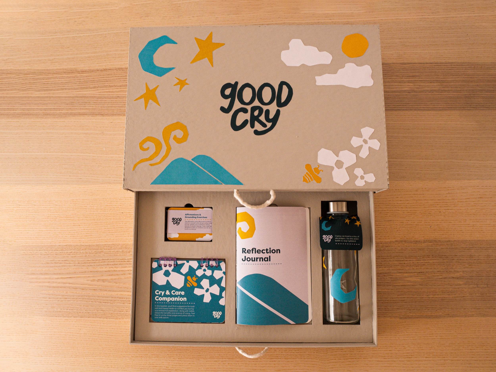
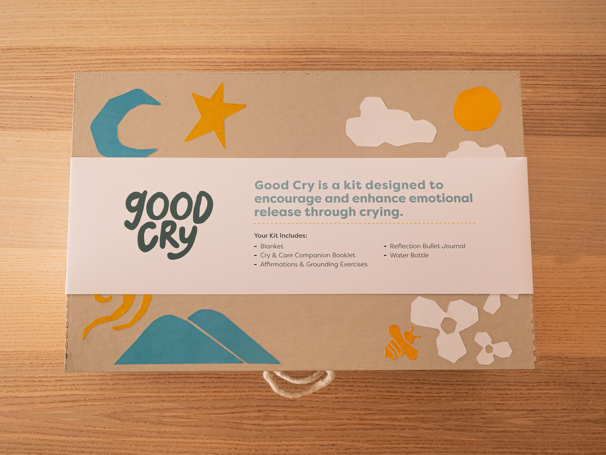
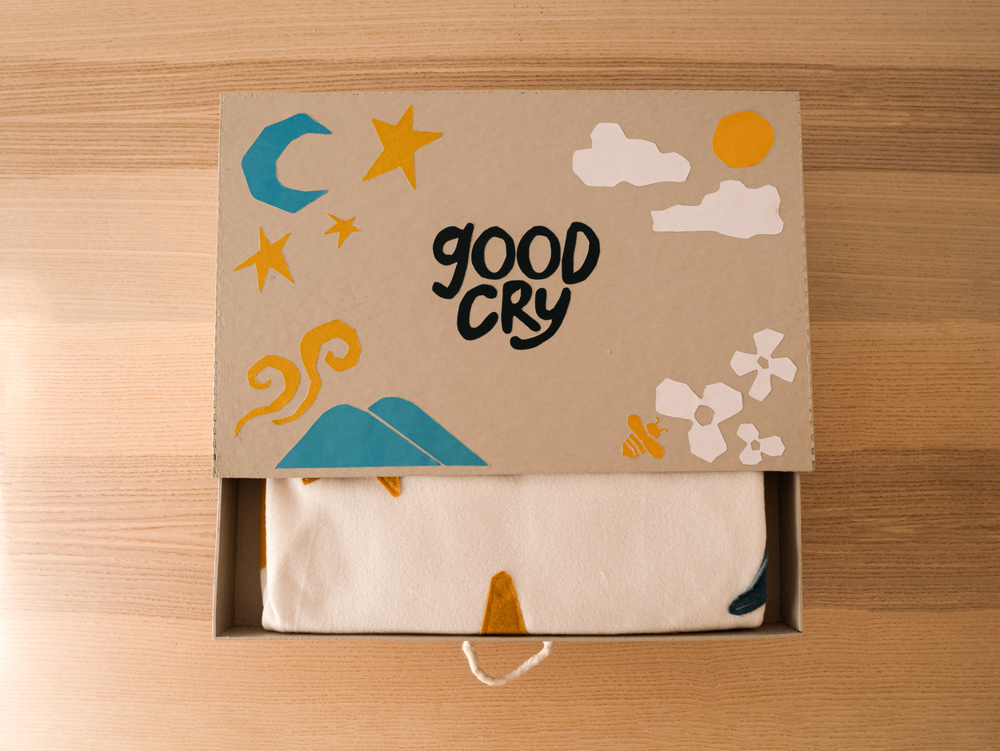
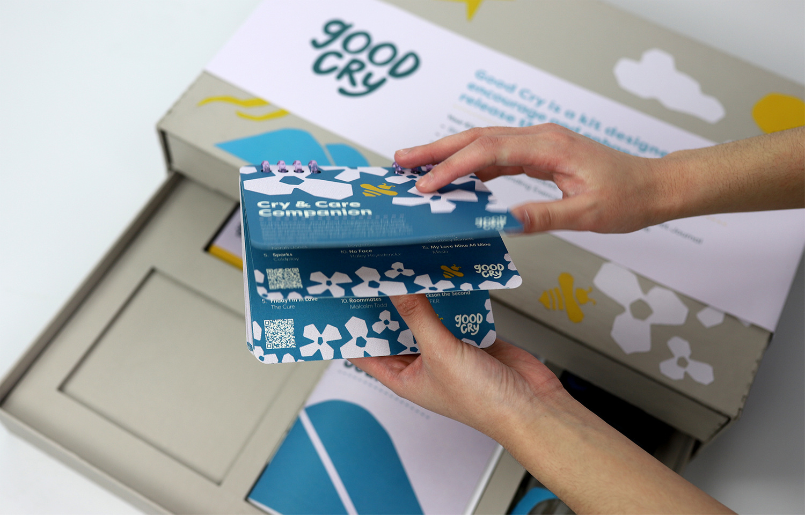
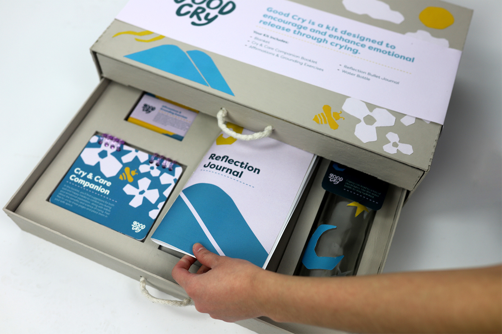
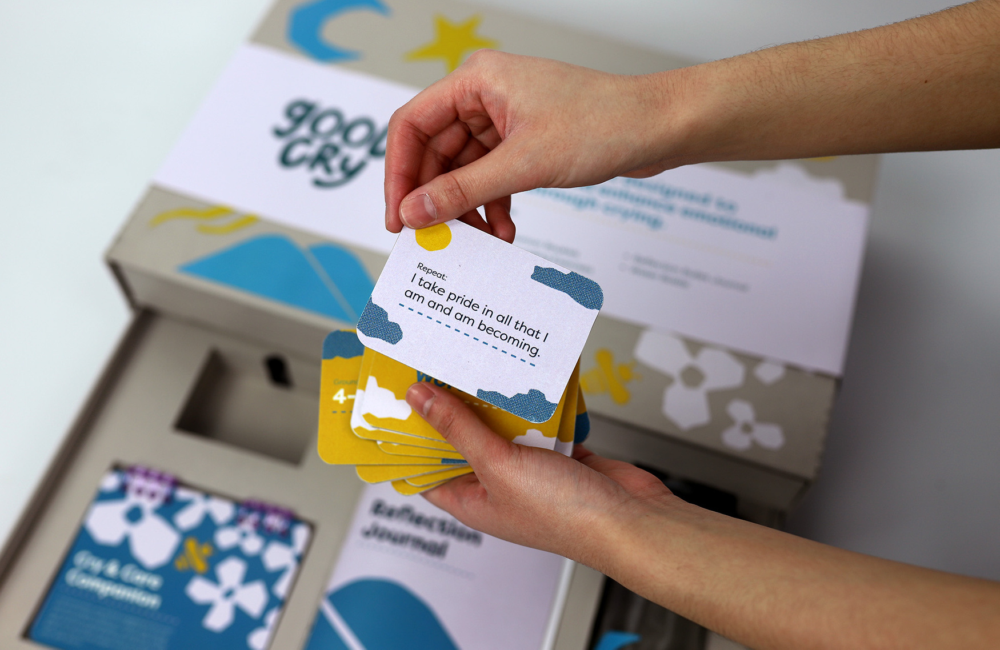
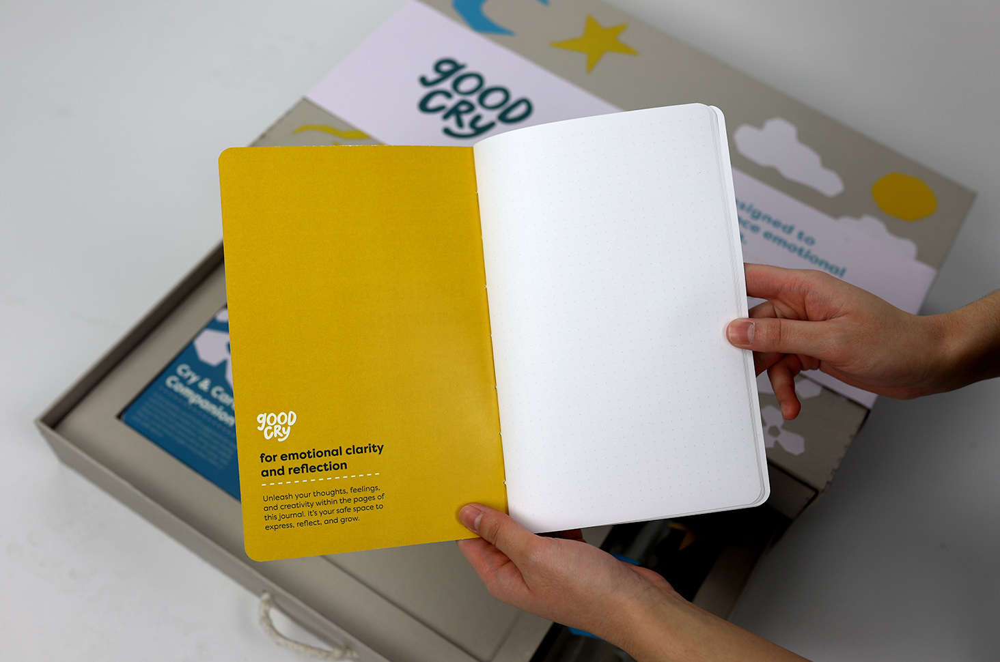
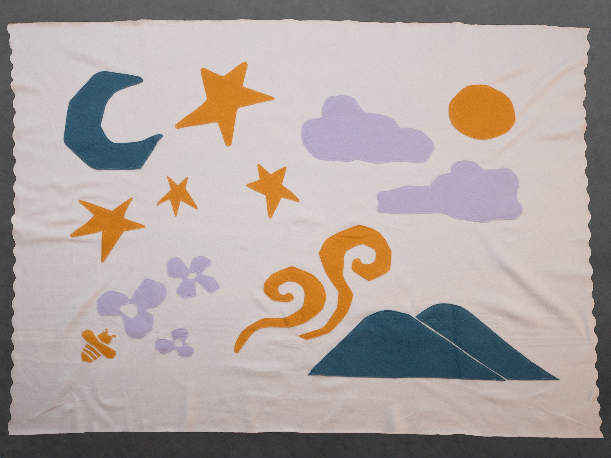

Packaging Design, Brand Identity
10/23 (4 weeks)
Amy Auman
Inspired by an emotional experience I had revisiting a childhood relic, Good Cry is a kit designed to encourage and enhance emotional release through crying, allowing the user to achieve catharsis in a healthy and healing way. The items in the kit can be used outside of the kit or kept all together as one unit.
The box contains a blanket, educational booklet, mindfulness exercises, journal, and water bottle. You can find more insight into the journey of this project in my process book.


One of the first steps in the design process for this project was learning about other people’s relationships and rituals associated with crying and/or feeling sad. I sent out a Google form to a diverse set of individuals. I learned that many lean on comfort objects and media such as a favorite stuffed animal or beloved movie to get through tough times. I also gleaned that some people processed their emotions through journaling and mindfulness exercises. In addition, they also gave me feedback on color associations, highlighting the cooler colors gave them solace.


Each collateral features illustrations that symbolize various relationships with crying. They are simple with with colors that both soothe and give a bittersweet tone. There’s variation and cohesion in the system with the illustrations culminating on the box and the blanket to form a more complete narrative.
Inside the box, the Cry & Care Companion aims at providing comfort media from sad songs to feel good movies. In addition, the booklet educates the user with Crying Fast Facts that feature the science and benefits of crying.

The Affirmation & Grounding Exercises cards give easy ways of emotional regulation and self-soothing techniques. Designed to be portable takeaways, the cards are built with thick chipboard to ensure longevity during transport.

The Reflection Journal contains bulleted pages that can act as a safe-space for creative, written expression.
The water bottle reminds the user to stay hydrated and healthy. Lastly, the blanket offers physical comfort.

this website was coded by krissy ♥, last updated March 2026